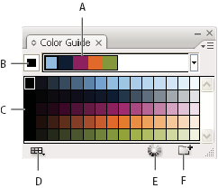

Color Guide overview
Use the Color Guide panel (Window > Color Guide) as tool for color inspiration while you create your artwork. The Color Guide panel suggests harmonious colors based on the current color in the Tools panel. You can use these colors to color artwork or you can save them as swatches.
You can
manipulate the colors that the Color Guide panel generates in a
number of ways, including changing the harmony rule, or adjusting
the variation type and the number of variation colors that appear.
Note: If
you have artwork selected, clicking a color variation changes the
color of the selected artwork, just like clicking a swatch in the
Swatches panel.

- A.
- Color harmony rule menu and current color group
- B.
- Set as base color
- C.
- Color variations
- D.
- Limits colors to specified swatch library
- E.
- Edit colors (opens the colors in the Live Color dialog box)
- F.
- Save group to Swatches panel
You
can save the color group and color variations to the Swatches panel.
If you want more control over the colors, click the Edit Colors
button  to
open the Live Color dialog box.
to
open the Live Color dialog box.
For a video on using the Color Guide to find and create color solutions, see www.adobe.com/go/vid0058.